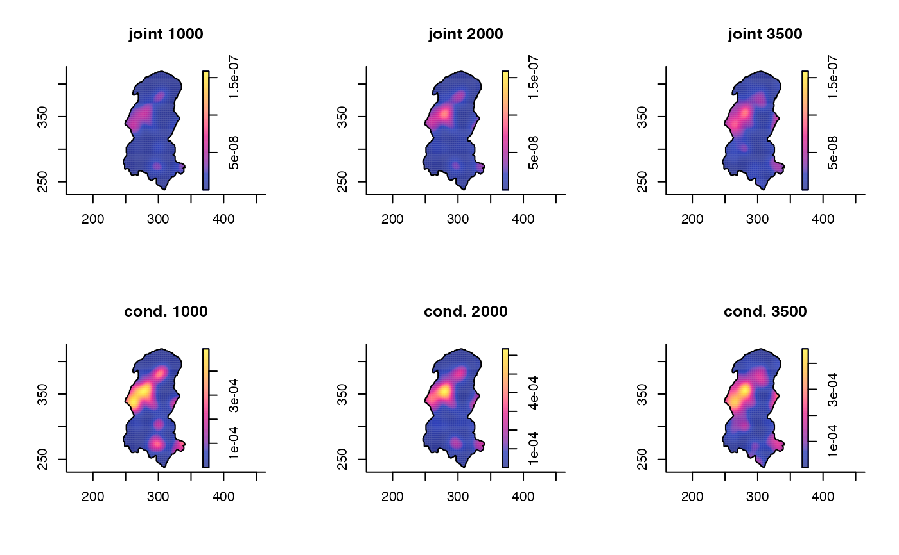

spattemp.density.RdProvides a fixed-bandwidth kernel estimate of continuous spatiotemporal data.
spattemp.density(pp, h = NULL, tt = NULL, lambda = NULL, tlim = NULL, sedge = c("uniform", "none"), tedge = sedge, sres = 128, tres = NULL, verbose = TRUE)
| pp | An object of class |
|---|---|
| h | Fixed bandwidth to smooth the spatial margin. A numeric value > 0. If unsupplied, the oversmoothing bandwidth is used as per |
| tt | A numeric vector of equal length to the number of points in |
| lambda | Fixed bandwidth to smooth the temporal margin; a numeric value > 0. If unsupplied, the function internally computes the Sheather-Jones bandwith using |
| tlim | A numeric vector of length 2 giving the limits of the temporal domain over which to smooth. If supplied, all times in |
| sedge | Character string dictating spatial edge correction. |
| tedge | As |
| sres | Numeric value > 0. Resolution of the [ |
| tres | Numeric value > 0. Resolution of the evaluation points in the temporal margin as defined by the |
| verbose | Logical value indicating whether to print a function progress bar to the console during evaluation. |
This function produces a fixed-bandwidth kernel estimate of a single spatiotemporal density, with isotropic smoothing in the spatial margin, as per Fernando & Hazelton (2014). Estimates may be edge-corrected for an irregular spatial study window and for the bounds on the temporal margin as per tlim; this edge-correction is performed in precisely the same way as the "uniform" option in bivariate.density.
Specifically, for \(n\) trivariate points in space-time (pp, tt, tlim), we have
$$\hat{f}(x,t)=n^{-1}\sum_{i=1}^{n}h^{-2}\lambda^{-1}K((x-x_i)/h)L((t-t_i)/\lambda)/(q(x)q(t)),$$
where \(x\in W\subset R^2\) and \(t\in T\subset R\); \(K\) and \(L\) are the 2D and 1D Gaussian kernels controlled by fixed bandwidths \(h\) (h) and \(\lambda\) (lambda) respectively; and \(q(x)=\int_W h^{-2}K((u-x)/h)du\) and \(q(t)=\int_T \lambda^{-1}L((w-t)/\lambda)dw\) are optional edge-correction factors (sedge and tedge).
The above equation provides the joint or unconditional density at a given space-time location \((x,t)\). In addition to this, the function also yields the conditional density at each grid time, defined as $$\hat{f}(x|t)=\hat{f}(x,t)/\hat{f}(t),$$ where \(\hat{f}(t)=n^{-1}\sum_{i=1}^{n}\lambda^{-1}L((t-t_i)/\lambda)/q(t)\) is the univariate kernel estimate of the temporal margin. Normalisation of the two versions \(\hat{f}(x,t)\) and \(\hat{f}(x|t)\) is the only way they differ. Where in the unconditional setting we have \(\int_W\int_T\hat{f}(x,t)dt dx=1\), in the conditional setting we have \(\int_W\hat{f}(x|t) dx=1\) for all \(t\). See Fernando & Hazelton (2014) for further details and practical reasons as to why we might prefer one over the other in certain situations.
The objects returned by this function (see `Value' below) are necessary for kernel estimation of spatiotemporal relative risk surfaces, which is performed by spattemp.risk.
An object of class "stden". This is effectively a list with the following components:
A named (by time-point) list of pixel images corresponding to the joint spatiotemporal density over space at each discretised time.
A named (by time-point) list of pixel images corresponding to the conditional spatial density given each discretised time.
The scalar bandwidth used for spatial smoothing.
The scalar bandwidth used for temporal smoothing.
A numeric vector of length two giving the temporal bound of the density estimate.
A pixel image giving the overall spatial margin as a single 2D density estimate (i.e. ignoring time).
An object of class density giving the overall temporal margin as a single 1D density estimate (i.e. ignoring space).
A pixel image giving the edge-correction surface for the spatial margin. NULL if sedge = "none".
A numeric vector giving the edge-correction weights for the temporal margin. NULL if tedge = "none".
A ppp.object of the spatial data passed to the argument of the same name in the initial function call, with marks of the observation times.
A numeric vector giving the discretised time grid at which the spatiotemporal density was evaluated (matches the names of z and z.cond).
Duong, T. (2007), ks: Kernel Density Estimation and Kernel Discriminant Analysis for Multivariate Data in R, Journal of Statistical Software, 21(7), 1-16.
Fernando, W.T.P.S. and Hazelton, M.L. (2014), Generalizing the spatial relative risk function, Spatial and Spatio-temporal Epidemiology, 8, 1-10.
Kelsall, J.E. and Diggle, P.J. (1995), Kernel estimation of relative risk, Bernoulli, 1, 3-16.
Sheather, S. J. and Jones, M. C. (1991), A reliable data-based bandwidth selection method for kernel density estimation. Journal of the Royal Statistical Society Series B, 53, 683-690.
Silverman, B.W. (1986), Density Estimation for Statistics and Data Analysis, Chapman & Hall, New York.
data(burk) burkcas <- burk$cases burkden1 <- spattemp.density(burkcas,tres=128)#>#>#>#>#>#>summary(burkden1)#> Spatiotemporal Kernel Density Estimate #> #> Bandwidths #> h = 11.2439 (spatial) #> lambda = 459.5736 (temporal) #> #> No. of observations #> 188 #> #> Spatial bound #> Type: polygonal #> 2D enclosure: [246.4, 341] x [237.6, 419.4] #> #> Temporal bound #> [413, 5775] #> #> Evaluation #> 128 x 128 x 128 trivariate lattice #> Density range: [6.845224e-12, 1.188266e-07]hlam <- LIK.spattemp(burkcas,tlim=c(400,5900),verbose=FALSE) burkden2 <- spattemp.density(burkcas,h=hlam[1],lambda=hlam[2],tlim=c(400,5900),tres=256)#>#>#>#>#>#>tims <- c(1000,2000,3500) par(mfcol=c(2,3)) for(i in tims){ plot(burkden2,i,override.par=FALSE,fix.range=TRUE,main=paste("joint",i)) plot(burkden2,i,"conditional",override.par=FALSE,main=paste("cond.",i)) }